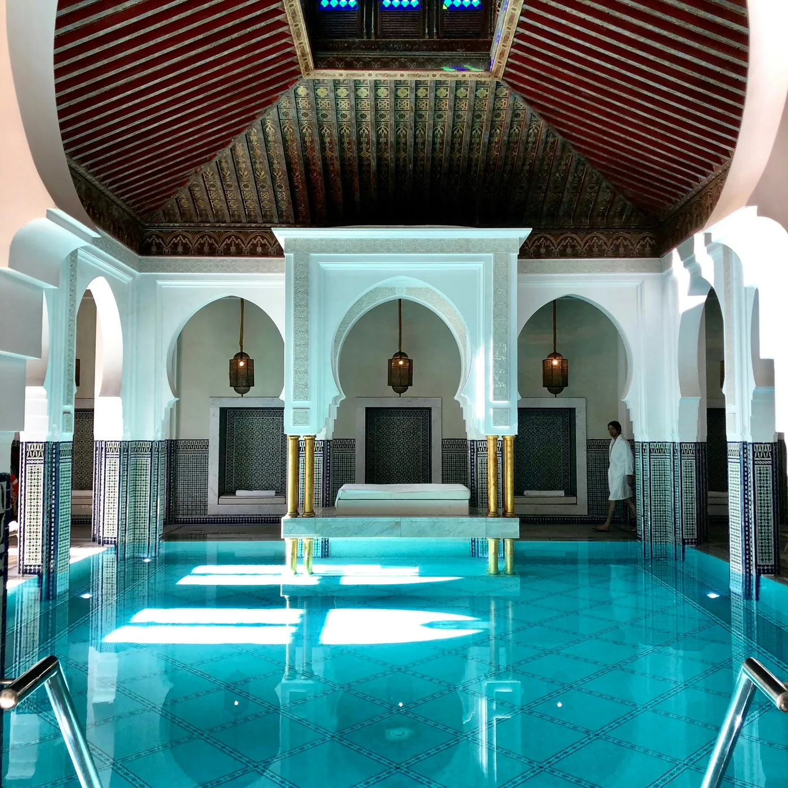
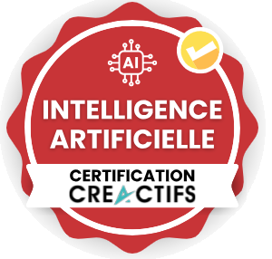
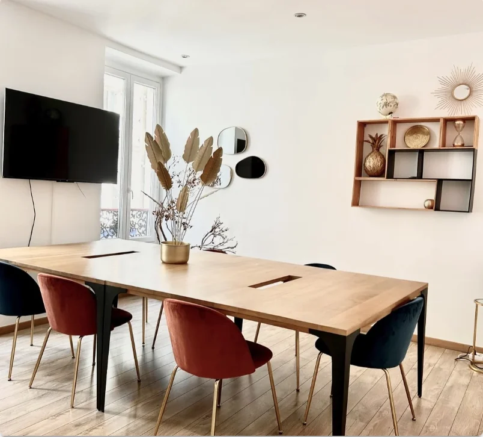

Du temps récupéré
Moins de ressaisies, de recherches d’informations et de tâches répétitives à traiter manuellement.
Plus de temps pour diriger, moins de temps à gérer
Expertise sectorielle : Médecine & chirurgie esthétiques · Spas & hôtellerie · Thalasso & thermal · Instituts & indépendantes
Premier rendez-vous gratuit et sans engagement.
CE QUE CELA CHANGE
AesthéIA intervient là où votre organisation perd du temps, où vos demandes perdent en suivi et où votre visibilité peut mieux soutenir votre activité.
Moins de ressaisies, de recherches d’informations et de tâches répétitives à traiter manuellement.
Les demandes, devis et relances sont plus faciles à identifier, à prioriser et à traiter au bon moment.
Votre site, votre présence locale et vos contenus sont structurés pour être mieux compris et faciliter la prise de contact.
Les informations utiles sont regroupées et les étapes clés deviennent plus simples à suivre pour vous comme pour votre équipe.
Secteurs
Choisissez votre secteur pour découvrir les enjeux, systèmes et résultats adaptés à votre activité.
AesthéIA aide les cabinets à structurer leur présence digitale, mieux organiser les demandes de consultation et fluidifier les tâches non médicales liées au suivi patient, dans le respect de la confidentialité et du contrôle humain.
Découvrir l’expertise dédiée
AesthéIA aide les spas à mieux organiser leurs campagnes saisonnières, leurs contenus, leurs demandes de réservation et le suivi des clients, tout en facilitant la circulation des informations entre les équipes.
Découvrir l’expertise dédiéeAesthéIA aide les établissements à rendre leurs offres plus lisibles, anticiper leurs temps forts, centraliser leurs informations et simplifier le suivi des demandes sur des parcours souvent complexes.
Découvrir l’expertise dédiéeAesthéIA aide les instituts à mieux organiser leur communication, leurs demandes, leurs relances et certaines tâches administratives afin de réduire la charge quotidienne.
Découvrir l’expertise dédiéeCONCRÈTEMENT
Un système AesthéIA peut relier les étapes qui, aujourd’hui, dépendent encore de manipulations manuelles ou de la mémoire de l’équipe.
Depuis votre site, un formulaire, un e-mail ou un autre canal de contact.
Les éléments utiles sont regroupés dans un suivi clair au lieu de rester dispersés.
Qualification, priorité, rappel ou brouillon peuvent être préparés selon vos règles.
Les actions sensibles restent soumises à une validation humaine lorsqu’elle est nécessaire.
Résultat recherché : moins de demandes oubliées, un suivi plus régulier et une équipe qui sait plus facilement quoi traiter en priorité.
Les solutions AesthéIA
Documents, rappels, transferts d’informations, préparation de réponses ou tâches répétitives : les étapes utiles sont reliées et assistées. Lorsque la situation l’exige, des agents IA spécialisés, coordonnés par un agent superviseur, prennent le relais sous validation humaine.
Ce que cela apporte : moins de manipulations, d’oublis et de temps consacré aux tâches à faible valeur.
Les demandes entrantes peuvent être centralisées, qualifiées et suivies avec des prochaines actions clairement identifiées.
Ce que cela apporte : un suivi commercial plus régulier et moins d’opportunités laissées sans suite.
Site, fiche Google, pages prestations, contenus et parcours de contact sont pensés ensemble pour rendre votre offre plus claire et plus facile à trouver.
Ce que cela apporte : une présence digitale plus cohérente, mieux comprise par les moteurs de recherche et orientée vers la prise de contact.
Les données importantes peuvent être rassemblées dans des tableaux de suivi adaptés à vos objectifs : demandes, rendez-vous, devis, conversions ou activité.
Ce que cela apporte : une lecture plus simple de ce qui fonctionne et des priorités à ajuster.
IA agentique
Une automatisation exécute des règles définies. Un agent IA peut analyser une situation, utiliser plusieurs outils et préparer l’action adaptée. Pour les organisations plus complexes, plusieurs agents spécialisés peuvent travailler ensemble sous la coordination d’un agent superviseur.
Elle prend en charge les tâches prévisibles et répétitives avec un fonctionnement stable et mesurable.
Il analyse un contexte précis, consulte les informations autorisées et prépare une action dans les limites définies.
Plusieurs agents spécialisés collaborent sur la relation client, les réservations, le CRM, la qualité, les opérations ou le pilotage.
Les décisions sensibles, les messages clients et les actions à impact restent soumis au contrôle de vos équipes.
Pour les groupes et réseaux multi-sites : l’agent superviseur coordonne les agents spécialisés, croise leurs informations et prépare la prochaine étape sans remplacer la décision humaine.
Pourquoi AesthéIA
L’objectif n’est pas d’ajouter des outils. Il est de corriger les points de friction qui freinent votre organisation, votre suivi ou votre visibilité.
Plus de vingt ans de terrain dans l’esthétique, le spa et la médecine esthétique pour comprendre les contraintes avant de proposer une solution.
Le parcours prospect, la présence digitale et les processus internes sont regardés comme un ensemble, pas comme des sujets séparés.
Les outils déjà en place sont conservés lorsqu’ils restent pertinents, afin d’éviter les changements inutiles.
Hébergement certifié HDS pour les données de santé, hébergement en France et validation humaine avant chaque envoi automatisé. L’IA libère du temps, sans remplacer votre équipe.
Les interventions
Analyse des freins, priorités et opportunités.
Livrable : plan d’action priorisé.
Un besoin ciblé traité par une automatisation ou un agent IA spécialisé, testés en conditions réelles.
Livrable : solution fonctionnelle et documentation.
Acquisition, suivi, automatisation, visibilité et pilotage reliés selon vos besoins. Pour les structures multi-sites, un système multi-agents peut être mis en place selon les besoins.
Livrable : systèmes, mise en route et documentation.
Après le déploiement, je vérifie le bon fonctionnement du système et j’effectue les ajustements nécessaires pendant 3 mois.
Ensuite : vous restez autonome, sans abonnement ni contrat de maintenance imposé.
La méthode et le contrôle humain
On automatise d’abord ce qui apporte une valeur claire, sans bouleverser inutilement votre organisation.
Comprendre les objectifs, les points de friction et les outils déjà en place.
Choisir les actions qui apportent le plus de clarté, de temps gagné ou de suivi.
Mettre en place une première solution et la vérifier dans les conditions réelles.
Documenter, faciliter la prise en main et améliorer selon les usages.
Les actions sensibles peuvent conserver une étape de contrôle avant envoi ou exécution.
Les systèmes sont vérifiés avant déploiement et adaptés à la nature des informations traitées.
Les outils existants sont conservés lorsqu’ils restent pertinents.
Fondatrice
Après plus de vingt ans dans l’esthétique, le spa et la médecine esthétique, je connais les réalités qui se cachent derrière l’expérience client : demandes à traiter, équipes à coordonner, visibilité à maintenir et tâches administratives qui s’accumulent.
Certifiée en webmarketing et en intelligence artificielle appliquée aux TPE, j’interviens aujourd’hui auprès des entreprises en reliant cette connaissance du terrain aux leviers actuels du digital, de l’IA et de l’automatisation.
Mon objectif : ne pas ajouter de technologie pour la technologie, mais concevoir des systèmes qui améliorent concrètement votre visibilité, votre suivi et votre efficacité.

Non. AesthéIA intervient auprès des entreprises partout en France métropolitaine, principalement à distance. Des interventions sur site peuvent également être organisées selon la nature de la mission, la localisation et les conditions définies ensemble.
Le coût dépend du périmètre du projet. Un diagnostic ciblé démarre autour de 800 € HT, la mise en place d’une première automatisation se situe généralement entre 3 000 € et 6 000 € HT selon sa complexité, et les interventions plus complètes sont chiffrées au cas par cas après un premier échange. Les agents IA et les systèmes multi-agents, notamment pour les structures multi-sites, sont chiffrés sur devis après cadrage. Le premier échange est gratuit et sans engagement : il permet de cadrer précisément vos besoins et de vous proposer un chiffrage adapté.
Cela dépend du périmètre du projet. Un diagnostic initial prend généralement quelques jours, et une première solution concrète peut être mise en place en quelques semaines. Les interventions plus complètes, impliquant plusieurs automatisations ou une refonte de la visibilité digitale, s’inscrivent sur un temps plus long, défini ensemble dès le départ.
Une automatisation exécute des règles définies à l’avance. Un agent IA analyse un contexte précis, consulte les informations autorisées et prépare une action dans des limites définies. Un système multi-agents fait collaborer plusieurs agents spécialisés sous la coordination d’un agent superviseur. Dans tous les cas, les décisions sensibles restent validées par vos équipes.
Il est surtout pertinent pour les groupes, réseaux et structures multi-sites. Pour un établissement unique, une automatisation ou un agent IA spécialisé suffit souvent. La recommandation se fait après le premier échange, en fonction de votre organisation et de vos priorités.
Oui, lorsqu’elle s’inscrit dans une logique d’automatisation. Je conçois ou repense des sites capables d’intégrer directement des fonctionnalités utiles à votre activité : prise de rendez-vous automatisée, chatbot de qualification, formulaires connectés à votre suivi commercial ou autres parcours adaptés à vos besoins. L’objectif n’est pas de créer un simple site vitrine, mais un site conçu pour informer, orienter et faciliter les actions de vos prospects.
Oui, c’est une exigence de base de chaque projet. Les données de santé sont hébergées dans un environnement certifié HDS, l’hébergement est situé en France et seules les informations nécessaires circulent entre vos outils. Les envois automatisés restent soumis à une validation humaine.
Non. Les automatisations prennent en charge les tâches répétitives : ressaisies, rappels, relances, préparation de réponses. Elles libèrent du temps sans remplacer l’humain dans la relation avec vos clientes ou vos patients.
Pas nécessairement. Je pars des outils que vous utilisez déjà et je les relie entre eux lorsque c’est possible. Un changement n’est proposé que s’il apporte un gain réel et clairement expliqué.
Il dure 30 minutes, il est gratuit et sans engagement. Nous faisons le point sur votre activité, vos outils et les tâches qui vous prennent le plus de temps, puis je vous indique les pistes les plus utiles et la suite possible.
Premier pas
Parlez-moi de votre activité, de vos besoins et de vos priorités pour préparer un premier échange.
Quelques questions pour préparer notre premier échange. Sans engagement.
Adresse
6 rue d'Armaillé
75017 Paris
Accueil exclusivement sur rendez-vous
Pour toute demande, contactez-moi par téléphone ou par e-mail.
